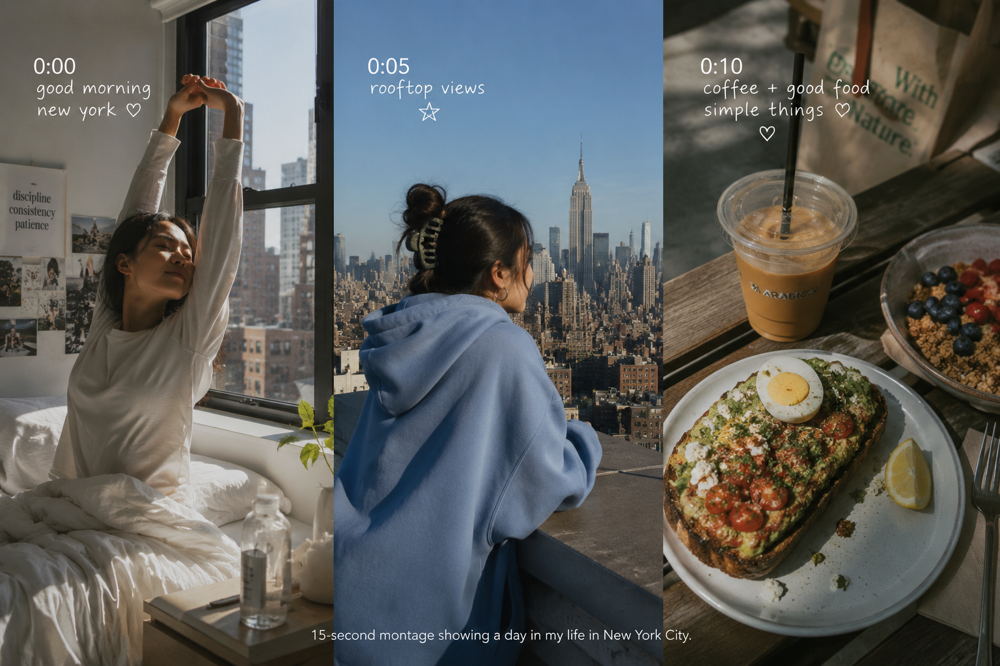

Introduction
Paste your essay introduction here.
Main Analysis
Paste your main analysis paragraphs here.
Conclusion
Paste your essay conclusion here.
A visual rhetoric website project analyzing Mai Pham's YouTube channel and vlog videos.
Created by Jeongwoo Lee
Mai Pham is a lifestyle and vlog creator known for videos centered on productivity, self-care, travel, and everyday experiences. Her channel combines personal storytelling with consistent visual presentation, creating a recognizable and relatable online identity.
Mai Pham's channel uses soft color palettes, natural lighting, and clean framing to establish a calm and intimate atmosphere. Rather than relying on heavily commercial production, her videos emphasize authenticity and emotional connection. This visual consistency helps strengthen audience recognition and supports her personal brand identity.
I selected Mai Pham's channel because it provides strong examples of visual rhetoric through editing, framing, and identity construction. Her content demonstrates how visual storytelling and personal branding influence audience engagement and meaning-making.
The scene uses domestic spaces, casual clothing, and everyday objects to construct an authentic and personal atmosphere. Mai Pham's bedroom, kitchen, rooftop, and city environment function as meaningful spaces that reflect her lifestyle and identity. Items such as food, plants, workout spaces, and personal belongings contribute to a sense of realism and make the environment feel lived-in rather than staged.
Natural lighting is heavily emphasized throughout the sequence. Morning sunlight entering the apartment and outdoor scenes creates a soft and cinematic mood while maintaining realism. The video combines close-up shots during personal routines with wide shots of city views and interior spaces. This balance allows the audience to feel emotionally close to Mai while also understanding the larger environment surrounding her life in New York.
The editing organizes multiple daily activities into a smooth visual progression. Scenes transition from preparation and self-care to outdoor movement, social interaction, and cooking. Rather than presenting each action separately, montage editing creates continuity and rhythm, making ordinary routines feel intentional and visually engaging.
At the denotative level, the sequence shows everyday activities such as getting ready, organizing, exercising, spending time outdoors, and preparing food. Connotatively, however, these scenes communicate independence, self-discipline, and a carefully constructed urban lifestyle. The visual rhetoric encourages viewers to interpret routine life not as mundane, but as productive, aesthetic, and personally meaningful.
This section will contain the full YouTube analysis paper.
Paste your essay introduction here.
Paste your main analysis paragraphs here.
Paste your essay conclusion here.
This personal logo was created using AI and designed to reflect symbolic identity, simplicity, and visual recognition.
ChatGPT said: Great! Designing a personal logo using the initials JJ calls for something that reflects personal identity, simplicity, and modern visual recognition. Since JJ comes from the name Jeongwoo, the logo should feel memorable and professional while maintaining a minimalist appearance.
Design concepts for JJ logo:
Then I’ll generate a concept visual based on this description.
Design a personal logo using the initials "JJ" derived from the name Jeongwoo. Create a bold and interconnected monogram that feels modern, minimalist, and professional. Use a deep blue and gold color palette to communicate professionalism, confidence, and creativity. Incorporate a subtle star element near the initials to symbolize identity, recognition, and personal expression. The logo should maintain strong readability and geometric balance while remaining simple and visually memorable. Create a clean personal identity logo suitable for digital and academic presentation.
Here’s a logo concept based on the initials JJ. The design combines a connected monogram with a star symbol to create a recognizable personal identity mark. The blue and gold colors communicate professionalism while maintaining a clean and modern appearance.
Create additional versions of the logo in different sizes. Please generate medium and small versions while maintaining the original design and proportions. Also create black and white versions for practical and professional use.
Wide shot of a young woman standing on a rooftop overlooking New York City, oversized blue hoodie, bright afternoon sunlight, cinematic natural lighting, calm atmosphere, realistic lifestyle vlog aesthetic, wide framing.
This prompt recreates Mai Pham's visual style using natural lighting, urban environment, and casual clothing to produce a calm and intimate lifestyle aesthetic.
0:00 Medium shot of a young woman waking up in a bright New York apartment, soft natural morning light.
0:05 Cut to a wide rooftop shot overlooking New York City, oversized blue hoodie, calm cinematic atmosphere.
0:10 Cut to a close-up of food and coffee in an outdoor setting, warm sunlight, realistic vlog aesthetic.
The montage connects personal interior spaces, urban environments, and lifestyle details through smooth visual transitions. Rather than presenting isolated moments, the sequence creates emotional rhythm through editing and scene progression.
Movement between apartment spaces, rooftop environments, and food-related imagery constructs a lifestyle narrative associated with independence, comfort, and modern city living. Through montage, ordinary routines become visually meaningful and emotionally engaging.
From a visual rhetoric perspective, the montage does more than document daily activity. It organizes space, mood, and movement to communicate identity and personal branding.

Through this website, Mai Pham's vlog channel can be understood as more than simple daily life content. Her videos use visual choices, editing, personal narration, and lifestyle images to build a strong connection with young viewers.
{kind=link}
{kind=link}
{kind=link}
{kind=link}